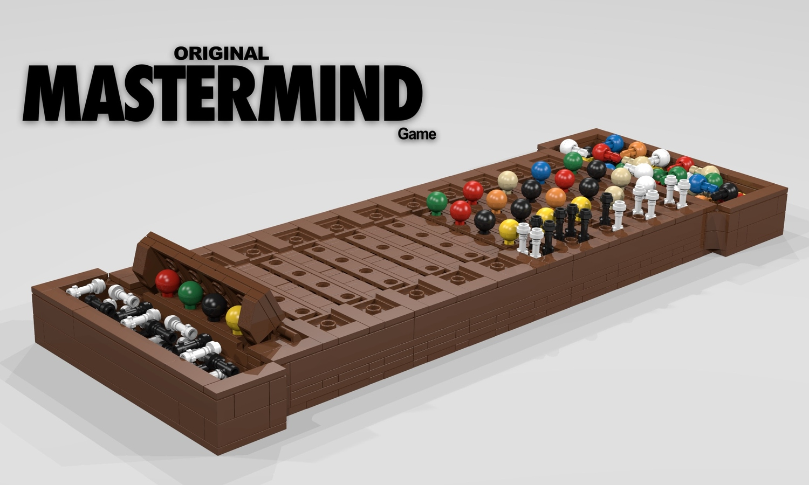

Project archive / Algorithms
Mastermind, solved.

Overview
For my final project in Introduction to Computer Science (CSE 131), we were tasked with developing an algorithm to solve the classic Mastermind game in twelve moves or fewer.
I found a twelve-move solution, but wasn’t happy with its inefficiencies. After researching minimax game theory, I developed a solution that averaged 4.1 moves.
The algorithm starts with a list of every possible guess. At each turn, it chooses a guess to maximize how many remaining possibilities can be eliminated. Based on feedback from the game, it removes guesses that cannot be the solution, repeating until the answer is found.
View repository (opens in a new tab)